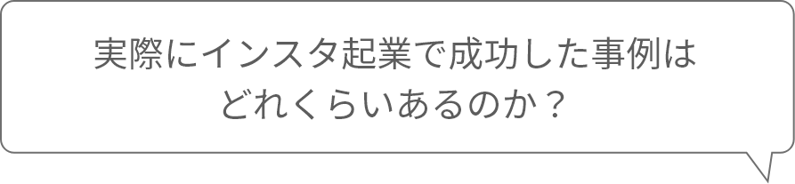
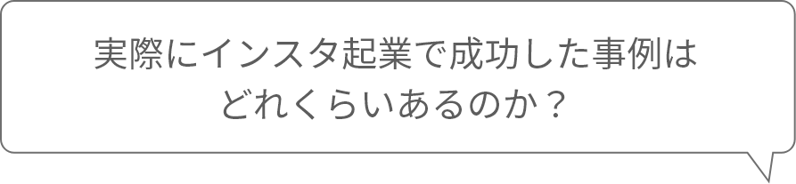

時代の最先端をゆく起業法
会社員でも”今日からできる”
インスタ起業とは？
インスタ起業とは
Instagramを使って、
商品・サービスを提供し、
事業収益を得るビジネスモデルです。
インスタ起業と聞くと
あまりイメージできない
かもしれないですが、
実は、ほとんどの人が体験している
とても身近なものなのです。
これらは全て
Instagramを活用して事業を
展開するインスタ起業なのです。
「起業したいけど、
いきなり会社を辞めたり、
お金をかけるリスクは取れない...」
という、リスクなく起業したい方に
オススメの
という、ごく普通の会社員でも
初期投資0円で始められるため
リスクなく3ヶ月で
起業することが可能です。
「特別なスキルもアイデアもないのに
起業なんてできない...」
と思っている方でも
インスタ起業を始めることで、
今日から月30万〜100万円を現実的に
目指すことができます。
 
